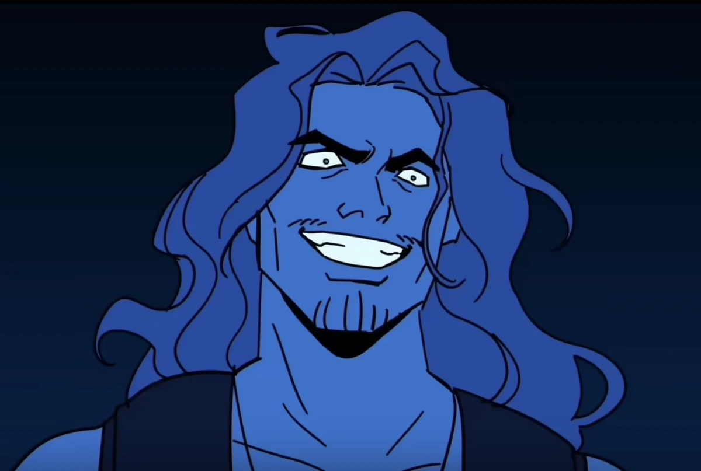

| Poseidon | |
|---|---|
|  | |
| Zeichnung von WolfyTheWitch | |
| Biografie | |
| Beruf | Griechischer Gott |
| Gott der Meere | |
| König des Ozeans | |
| Zugehörigkeit | Olymp |
| Familie | Zeus (Bruder) |
| Poliphemus (Sohn) | |
| Charybdis (Tochter) | |
| andere Olympioniken Verwandte | |
| Status | Unsterblich |
| Hinter den Kulissen | |
| Auftritte | Ozean Saga |
| Vergeltungs Saga | |
| Original Stimme | Steven Rodriguez |
| Deutsche Stimme | Rolle offen |
Poseidon
Grausamkeit ist Gnade für uns selbst - Poseidon (Grausamkeit & Geh schon ins Wasser)
Poseidon ist der Gott der Meere. Er ist der Sohn von Kronos und Rhea und Vater aller Zyklopen. Er dient als Hauptantagonist in Epic: The Musical.
Biografie
Akt 1
Poseidon erscheint das erste Mal vor Odysseus in Lamos, nachdem dieser den
Windbeutel von Aiolos geöffnet hat. Er enthüllt, dass Poliphemus, der Zyklop, den
Odysseus und seine Männer erblindet haben, sein Sohn war. Zur Strafe für diese Tat belegt Poseidon Odysseus mit
seinem Zorn und verhöhnt ihn zugleich dafür, dass er zu schwach und zu gnädig gewesen sei, um die Sache richtig
zu Ende zu bringen.
Nach Poseidons gewaltigem Sturm sind nur noch 43 Männer von Odysseus’ Crew am Leben. Bevor Poseidon den Rest
töten kann, öffnet Odysseus den Windbeutel erneut und nutzt die verbleibenden Winde, um zu entkommen.
Schließlich erreicht er die Insel der Kirke.
Akt 2
Poseidon bleibt acht Jahre lang im Verborgenen, nachdem Odysseus ihm entkommen ist. Doch gerade als Odysseus
kurz davor ist, Ithaka zu erreichen, taucht Poseidon wieder auf. Er enthüllt, dass er die ganze Zeit auf den
perfekten Moment gewartet hat, um sich an Odysseus zu rächen. Er droht ihm und fordert ihn auf, sich ins Meer
zu stürzen und Selbstmord zu begehen. Sollte er sich weigern, werde Poseidon ganz Ithaka im Meer versinken
lassen – einschließlich Penelope und Telemachos. Zudem droht er, Telemachos die Augen auszustechen, so wie
Odysseus es mit Polyphemus getan hat.
Schließlich gelingt es Poseidon, Odysseus ins Wasser zu stoßen. Doch Odysseus nutzt den Windbeutel, den ihm
Hermes gegeben hat, um sich aus dem Wasser zu katapultieren und den Sturm gegen Poseidon selbst zu richten.
Poseidon verspottet ihn zunächst dafür, den Beutel geöffnet zu haben, da die entfesselten Winde ihn daran
hindern würden, jemals nach Ithaka zurückzukehren. Doch Odysseus dreht den Spieß um: Da Poseidon unsterblich
ist, nutzt er diese Tatsache, um den geschwächten Gott so lange zu quälen, bis dieser schließlich nachgibt und
den Sturm beendet.
Während er sich zurückzieht, bemerkt Poseidon voller Bitterkeit, zu welch schrecklicher Person Odysseus
geworden ist. In der offiziellen Animatic des Livestreams erscheint er in einem ähnlich geschwächten Zustand
wie Athena am Ende von God Games.
Fähigkeiten
-
Schmetter die Meere
- Poseidon beschwört eine riesige, wässrige Version seiner selbst herauf und benutzt seinen Dreizack, um die Meere buchstäblich in Millionen Stücke zu zerschmettern, als wäre er aus Glas.
- Benutz in: